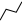
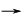
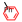

Bedienung von Sciformation VectorMol
Erste Schritte
Werkzeuge und Aktionen
| Symbol | Beschreibung | Tastenkürzel / Mausaktion |
| Dateien | ||
| Leert das aktuelle Blatt, um eine neue Zeichnung zu beginnen. | ||
| Öffnet einen Dialog, um ein MOLfile oder ein RXNfile zu öffnen. | ||
| Speichert die aktuelle Zeichnung als MOLfile oder RXNfile auf Ihrem Computer. | ||
| Speichert die aktuelle Zeichnung als SVG-Datei auf Ihrem Computer. | ||
| Zeichnen | ||
| In das Eingabefeld für die Atomsorte können Elemente wie "S" oder die Kürzel von Vorlagen wie "Ph" eingegeben werden. Bei Elementen sind Modifizierungen wie "+", "-", "." oder ":", vorangestellte Isotopenmassen wie bei "13C", die explizite Angabe von Wasserstoffatomen wie bei "CH2" sowie entsprechende Kombinationen zulässig. | Aktivieren: F2 Deaktivieren: Esc Direktwahl: B / C / F / H / I / L (Cl) / N / O / P / R (Br) / S | |
| Zeichnet die eingestellte Atomsorte oder ändert bestehende Atome durch Anklicken. | A | |
| Zeichnet Bindungen mit der gewählten Bindungsordnung, oder ändert bestehende Bindungen durch Anklicken. | 1 / 2 / 3 Strg beim Zeichnen entsperrt den Winkel Umschalt beim Zeichnen entsperrt die Bindungslänge | |
| Zeichnet Einfachbindungen aus der Bildebene heraus, in die Ebene hinein bzw. mit nicht definierter Stereochemie, oder ändert bestehende Bindungen durch Anklicken. | U / D / M | |
| Zeichnet Bindungen, die nicht näher spezifiziert sind (z.B. koordinative Bindungen) oder aromatische Bindungen (Bindungsordnung 1,5), oder ändert bestehende Bindungen durch Anklicken. | ||
|  | Zeichnet Ketten von Einfachbindungen mit der gewählten Atomsorte. Die neu gezeichnete Kette wird automatisch ausgewählt. | W |
| Löschwerkzeug | Entf | |
| Werkzeug zum Setzen des Anknüpfungspunkts, nur bei der Bearbeitung von Vorlagen verfügbar. | ||
| Plus-Werkzeug zum Trennen einzelner Komponenten bei der Bearbeitung von Reaktionsgleichungen. Löscht man das Plus zwischen zwei Komponenten, werden diese zusammengefasst, z.B. bei ionischen oder Komplexverbindungen mit mehreren unverbundenen Teilen. | ||
|  | Zeichnen eines Reaktionspfeils, um Edukte und Produkte in einer Reaktionsgleichung zu trennen. Beim erneuten Zeichnen eines Pfeils wird der bestehende durch ein Plus ersetzt, d.h. mehrstufige Reaktionen werden derzeit nicht unterstützt. | |
| Auswahl | ||
| Rechteck- oder Lassoauswahl. Durch Ziehen eines ausgewählten Objekts (Atom, Bindung, Plus, Pfeil) wird die Auswahl verschoben, ist das Objekt nicht selektiert, dann wird nur das Objekt verschoben. | E / Q | |
| Schneidet die Auswahl aus, kopiert sie oder fügt die entsprechenden Teile ein. Auf Daten anderer Programme oder die Windows-Zwischenablage kann nicht zugegriffen werden. | Strg + X / Strg + C / Strg + V | |
| Rotiert die Auswahl durch Klick ins Zentrum und Ziehen mit der Maus (2D/3D) | V / T | |
| Rotiert die Auswahl um die Bindung zum nicht selektierten Teil | ||
| Vertauscht für die Auswahl oben/unten bzw. links/rechts | ||
| Auswahl als Gruppe definieren. Eine Gruppe wie "Ph" kann nur definiert werden, wenn max. eine Bindung aus der Gruppe herausführt. Führen genau zwei Bindungen heraus, so kann ein Polymer (z.B. mit "n") oder eine Wiederholungseinheit (z.B. mit "3") definiert werden. Besteht die Auswahl aus mehreren unverbundenen oder zu unterschiedlichen Molekülen gehörigen Teilen, so kann keine Gruppe definiert werden. | Strg + G | |
|  | Gruppe unter dem Mauszeiger, oder Gruppen in der Auswahl auflösen. | Strg + Umschalt + G Strg + U |
| Ansicht | ||
| Wählt durch Klick oder Ziehen der Maus einen Bereich, der vergrößert wird | Bild auf (in die Mitte) Strg + Mausrad auf | |
| Wählt einen größeren Bildausschnitt | Bild ab Strg + Mausrad ab | |
| Sonstiges | ||
| Rückgängig / Wiederherstellen | Strg + Z / Strg + Y | |
Weitere Tastenkürzel und Mausaktionen
| Aktion | Tastenkürzel / Mausaktion |
| Ladung des Atoms unter dem Mauszeiger erhöhen/senken | + / - |
| Atom unter dem Mauszeiger als Radikal | . |
| Atom unter dem Mauszeiger oder Auswahl durch aktuelle Atomsorte / Vorlage ersetzen. | Enter |
| Aktuelle Aktion abbrechen oder nichts auswählen | Esc |
| Alles auswählen | Strg + A |
| Gewählte Objekte aus der Zeichnung löschen, oder das Löschwerkzeug aktivieren | Entf |
| Zeichnung durch MOLfile ersetzen | Lokal gespeichertes MOLfile mit der Maus ablegen |
| MOLfile zu Zeichnung hinzufügen | Strg halten und MOLfile mit der Maus ablegen |
| Auswahl oder Zeichnung in der Ebene verschieben (Alt erhöht die Präzision) | Pfeiltasten vertikal: Umschalt + Mausrad horizontal: Strg + Umschalt + Mausrad |
| Auswahl oder Zeichnung nach vorn oder hinten verschieben (Alt erhöht die Präzision) | Pos1 / Ende J / K |
Vorlagen
Vorlagen nutzen
Vorlagen lassen sich auf zweierlei Weise nutzen:
- durch Eingabe des gewählten Kürzels anstelle eine Atomsorte wird die Vorlage mit dem gesetzten Anknüpfungspunkt wie ein Atom eingefügt. Bei Überschreitung der Bindungsordnungen wird eine zusätzliche Einfachbindung eingefügt.
- durch Auswahl der Vorlage über die Symbolleiste kann die Vorlage mit der Maus positioniert werden, z.B. zum Aufbau annelierter Ringsysteme. Auch hier kann die schwebende Auswahl mit dem Mausrad ausgerichtet werden.
Vorlagen einrichten
Zum Einrichten einer Vorlage muss das Programm mit dem Parameter "mode=tmpl" aufgerufen werden. Zeichnen Sie dann wie gewohnt, oder öffnen Sie ein bestehendes MOLfile. In der oberen Symbolleiste werden Eingabefelder angezeigt, um den Namen und eine oder mehrere Abkürzungen einzugeben. Der Anknüpfungspunkt wird über das -Werkzeug definiert. Dann speichern Sie die Vorlage bei Ihrer VectorMol-Installation im Unterordner "templates" mit dem Dateinamen [Nummer].mol, wobei das Laden bei 0.mol begonnen wird. Achten Sie darauf, dass die Reihe der Dateinamen keine Lücke aufweist und die Dateien zugreifbar sind.
Programmierschnittstelle (nur für Entwickler)
Sciformation VectorMol kann in einem Iframe eingebettet in anderen Anwendungen genutzt werden. Rufen Sie die Javascript-Funktion getMolRxnfile() auf, um die aktuelle Zeichnung als MOLfile bzw. RXNfile abzufragen. Über setMolRxnfile(String) können Sie die aktuelle Zeichnung durch ein MOLfile bzw. RXNfile aus Ihrer Anwendung setzen.
Über den URL-Parameter "mode=rxn" können Sie den Anwendern das Zeichnen und Bearbeiten von Reaktionsgleichungen erlauben. Mit "lang=[de|en]" können Sie die Sprache des Programms einstellen. Der Parameter "embedded=true" deaktiviert Funktionen zum Laden und Speichern von Dateien, die entsprechenden Symbole werden ausgeblendet.
Beachten Sie beim Einbetten von Sciformation VectorMol unbedingt die Lizenzbedingungen! Für die (auch teilweise) kommerzielle Nutzung benötigen Sie eine Lizenz der Sciformation Consulting GmbH. Die allgemeine CC-BY-NC-SA-Lizenz ist NICHT mit open-source-Lizenzen wie der GPL oder AGPL kompatibel.
Wenn Sie die Freiheiten der CC-BY-NC-SA-Lizenz (Namensnennung, keine kommerzielle Nutzung, Weitergabe unter gleichen Bedingungen) nutzen möchten, um das Programm anzupassen oder weiterzuentwickeln, dann erhalten Sie auf Anfrage besser lesbaren Quellcode.